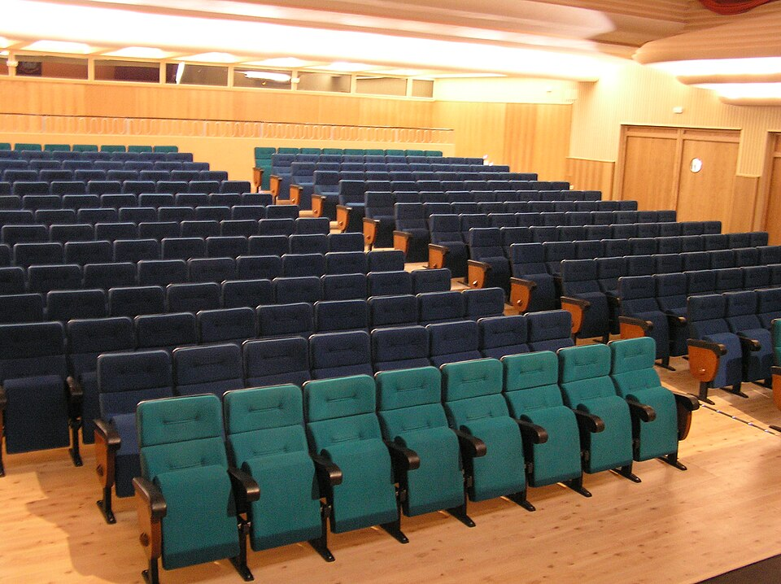
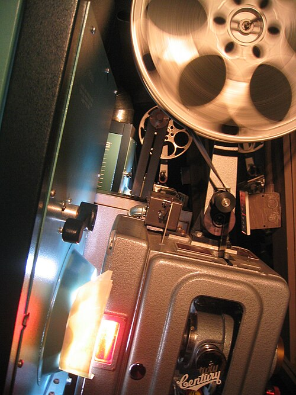
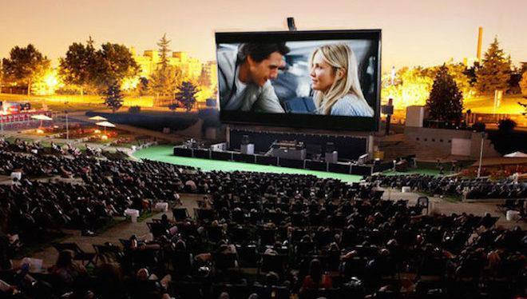

Dónde sentarse en el cine

Cosasdebeas
·
CC BY-SA 4.0
A mí me gusta sentarme por el centro de la sala. Desde ahí se ve bien
la pantalla y no tengo que mover mucho la cabeza.
Si la película es larga, suelo buscar un sitio cerca del pasillo. Así
es más fácil salir si hace falta.
Volver al índice
Qué hay en la cabina de proyección

Foto de christian razukas
·
CC BY-SA 2.0
La cabina de proyección está detrás de las últimas filas. Es desde
allí desde donde se proyecta la película hacia la pantalla.
Antes se usaban rollos de película. Ahora la mayoría de las
proyecciones son digitales.
Volver al índice
Una sesión de cine al aire libre

Foto de Diario de Madrid
·
CC BY 4.0
El cine al aire libre es un buen plan para las noches de verano. La
gente lleva algo para sentarse y busca sitio frente a la pantalla.
Conviene llegar pronto para sentarse con los amigos. También llevaría
una chaqueta, por si refresca.
Volver al índice